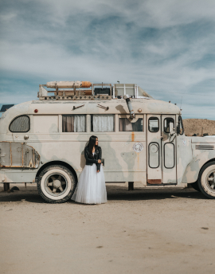
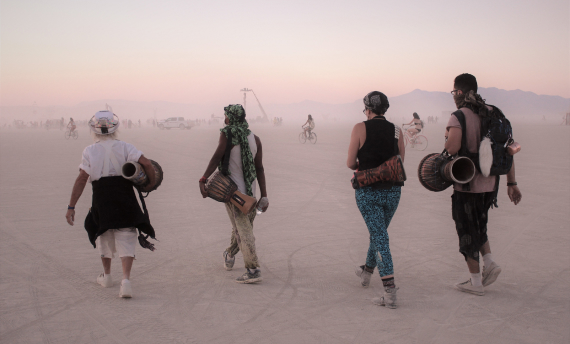
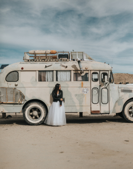
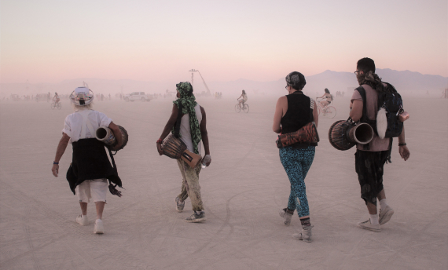

About the event
Rebuilding the society
Burning Man is a network of people inspired by the values reflected in the Ten Principles and united in the pursuit of a more creative and connected existence in the world. Throughout the year we work to build Black Rock City, home of the largest annual Burning Man gathering, and nurture the distinctive culture emerging from that experience.
This drives us
Burning Man Project will bring experiences to people in grand, awe-inspiring and joyful ways that lift the human spirit, address social problems, and inspire a sense of culture, community, and civic engagement. Burning Man provides infrastructural tools and frameworks to support local communities in applying the Ten Principles through six interconnected program areas, including Arts, Civic Involvement, Culture, Education, Philosophical Center, and Social Enterprise.
 


